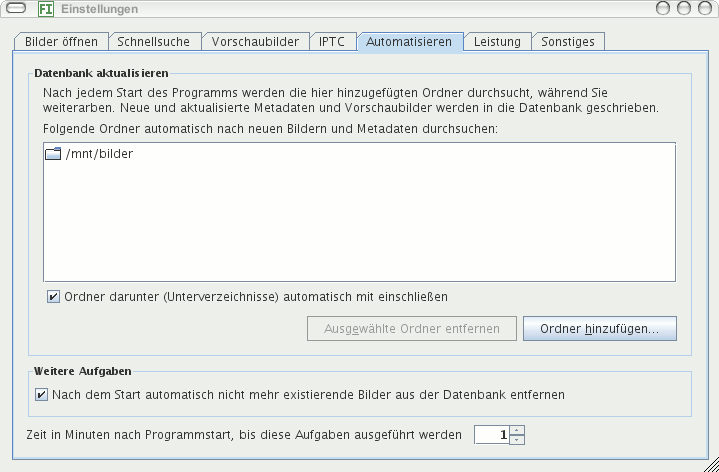

Sie können Ordner auswählen, die automatisch nach neuen und in der Datenbank nicht existierenden Metadaten durchsucht werden und mit denen dann die Datenbank aktualisiert wird.
Setzen sie hier ein Häkchen, wird nach dem Start für jedes Bild in der Datenbank geprüft, ob es noch im Dateisystem existiert. Ist das nicht der Fall, wird es aus der Datenbank gelöscht.
